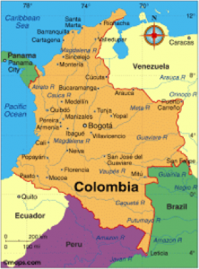
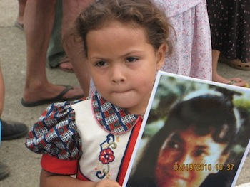
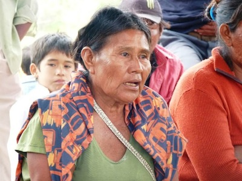
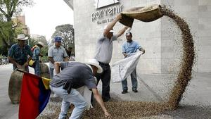

Dear Friends,
Seasons greetings to you. Here is our update from the Americas.
IFOR Delegation - March 16 – 28, 2014
Members of the International Fellowship of Reconciliation family (FOR Peace Presence, FOR Austria, SweFOR, SERPAJ, FOR USA, and IFOR) invite you to join us on a delegation to explore our work with communities, organizations, and individuals engaged in a nonviolent struggle to defend their lives, land, and dignity.
Colombia is at a crossroads. After enduring decades of violent armed conflict, for the first time in history, the government created laws to return stolen lands and recognize victims of state crimes. The government and the country’s largest guerrilla group, the FARC are currently engaged in peace talks. Hope is in the air, but as foreign investment skyrockets, corporations pillage the country at an unprecedented rate, aggravating Colombia’s conflict. What are the prospects for lasting peace? How are communities responding? Read more.
Mexico and Central America face extreme levels of violence since the war on drugs was intensified in the region. Join thousands of others calling on the President and Congress to stop funding this bloody war. Please take one minute now to sign this simple petition against a war and for effective and humane alternatives to the drug war at home and abroad. Go here to sign.
FOR and six other organizations have just published Rethinking the Drug War in Central America and Mexico. Read the summary or download the report.
There was positive news this month, as Colombian President Juan Manuel Santos apologized to the Peace Community of San Jose de Apartadó, with whom FOR has lived and worked with for over a decade. The apology came on December 10, International Human Rights Day, as Santos addressed the whole of Colombia and expressed his “deep admiration and respect” for the Community.
Santos was apologizing for “unjust accusations,” made by then-President Álvaro Uribe and other officials in the aftermath of the 2005 massacre in San José de Apartadó. Santos’s apology was welcome. Let’s hope there’s more on the way. Read more.
By Susana Pimiento
Sitting under a tree in humid 90-degree weather and surrounded by a sea of soy fields in Tucautí Poty, I couldn’t help but think how familiar and yet unknown this place was to me. There is something unique in this landlocked country, in the heart of South America, where peasant and indigenous people’s main language is Guaraní, and Spanish speakers like myself need interpretation. Where the Cold War military dictatorship lasted several decades longer than in other countries in the region: General Alfredo Stroessner’s sanguinary rule lasted from 1954 until 1989. Yet I found communities and groups very similar to those of my birth country of Colombia, fighting inequality, struggling for a piece of land to grow the crops they have grown for centuries; communities organized and committed to nonviolence. Read more.
By Liza Smith
The idea of “American goods” might bring to mind Chevrolets, a fancy refrigerator, or Hollywood movies, but it also includes something much smaller and much more ancient: seeds. The commercialization of patented seeds is one of the three most profitable businesses in the world. According to a resolution passed in 2010 as a requirement for the approval of the Free Trade Agreement with the United States, 4,271 tons of seeds of rice, potatoes, corn, and other vegetable products have been destroyed in Colombia. Colombian farmers have gone on strike and taken to the streets. Read more.
By Gina Spigarelli
The FARC guerrillas and Colombian government have moved into the third of five points of peace talks - illicit drug policy - after coming to an agreement on political participation last month. But such participation was placed in doubt after the removal from office of democratically elected leftist Mayor Gustavo Petro by the right-wing Inspector General, based on “crisis and chaos” caused Petro tried to shift Bogota’s garbage collection system from private administration to the public sector. Ordoñez also banned the mayor – a former M-19 guerrilla who was expected to run for president next year - from holding public office for 15 years. Despite blows to the process this month, the FARC declared a 30-day unilateral ceasefire beginning on December 15. The peace negotiations will continue in Havana in the New Year. Read more.
|